IDV Help
- Seeing
- Shapes
- 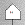
Conjecture
- 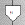
Negated conjecture
- 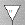
Axiom
- 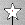
Assumption
- 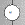
Plain
- 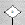
Lemma
- 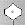
Theorem
- 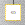
$false
- Colors
- Black outline:
FOF
- Red outline:
CNF
- Inference tags
- 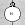
Equality reasoning
- 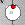
Non-logical consequence
- 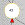
Split
- Focussing
- Mouse over:
Colors the ancestors and descendants
- Left click:
Popup inference formulae window
- Verification control panel - see below
- 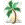
Open SystemOnTSTP window with verification proof
- Control left click:
IDV for this node and its parents
- Shift control left click:
IDV for this node and its ancestors
- Control right click:
IDV for this node and its children and their parents
- Shift control right click:
IDV for this node and its descendants and their parents
- Zooming
- 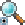
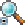
Zoom in/out 50%
- 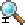
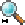
Fit image to pane height/width
- Verifying
-
Hide/display ticks on verified nodes
-
Start/stop verification process
- System pull down:
Trusted system for verification
- Time limit:
Time limit in seconds for verifying (? each step of overall ?)
-
Verification controlled by GDV/IDV
-
Start verification process
- Limiting
-
Display/hide nodes that are not logical consequences of axioms
-
Enable/disable redline slider,
raise/lower redline to hide nodes above redline
- 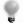
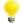
Disable/ensable interestingness slider,
raise/lower interestingness threshold to hide less interesting nodes
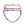
Protect/unprotect leaves from being hidden
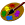
Redraw derivation with only visible nodes (? does this apply to redline ?),
undo/redo redrawing to previous interestingness level
- Recursing
- 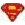
Open SystemOnTSTP window with currently displayed nodes' formulae
- Helping